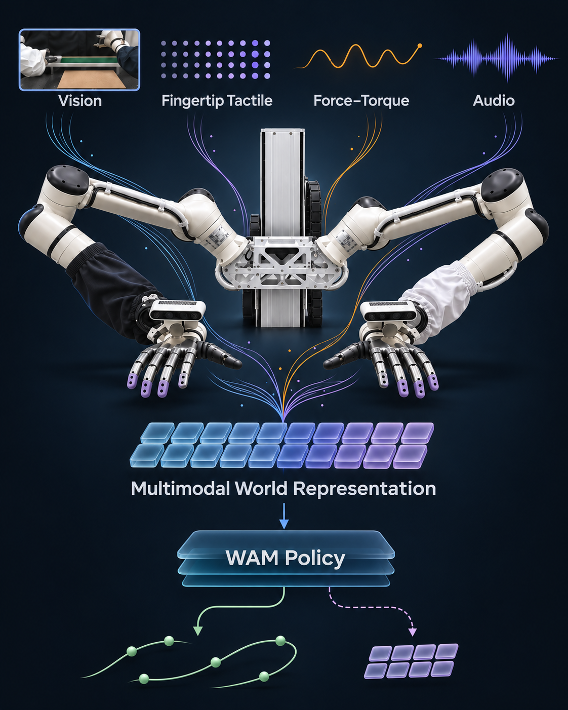

Real-world task success
Scroll to see all tasks.
View all success rates
30 trials per task and configuration.
View model parameter counts
† HiMoDex Stage 2, excluding offline UMT5.
HiMoDex

Scroll to see all tasks.
30 trials per task and configuration.
† HiMoDex Stage 2, excluding offline UMT5.
10 trials per task and configuration in an independent evaluation.